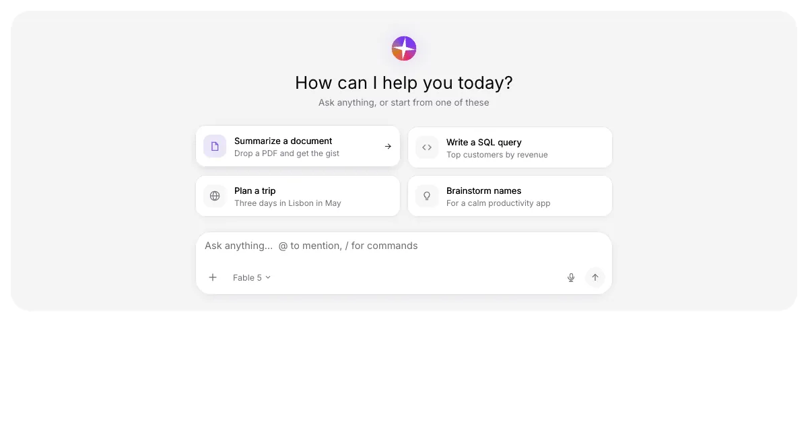

Welcome Suggestions
The empty state: a glowing mark, greeting, staggered starter cards that lift on hover, and the composer.

Usage
Add glowkit next to eframe:
cargo add glowkit eframeThen draw it inside any egui Ui:
use glowkit::prelude::*;
use glowkit::agents::{WelcomeSuggestion, WelcomeScreen, SmartComposer, ComposerState};
use glowkit::components::Icon;
let s = [WelcomeSuggestion::new("Plan a trip", "Three days in Lisbon", Icon::Globe)];
if let Some(i) = WelcomeScreen::new("How can I help you today?").suggestions(&s).show(ui, |ui| {
SmartComposer::new(&mut composer).show(ui);
}) { composer.text = s[i].title.clone(); }Prefer to own the code? The glowkit CLI copies this component's source into your project, shadcn-style:
cargo install glowkit-cli
glowkit add asst-welcomeEquivalent to
If you know this pattern from assistant-ui, CopilotKit and nextui (agent), Welcome Suggestions is the Rust version: an original egui implementation, not a port, that runs natively and in WebAssembly.
- Thread Welcomeassistant-ui
- Empty stateassistant-ui
- SuggestionsCopilotKit
- Welcome Screennextui (agent)
About Welcome Suggestions
Welcome Suggestions is one of 85 components in glowkit's AI category. It lives in the glowkit-agents crate, enabled by the agents feature of glowkit (on by default). It reads its colors from the active glowkit theme, so it matches the rest of your app in light, dark or a custom brand theme, and every color, size and timing has a setter to override it.
Everything an AI app needs on screen: streaming Markdown chat, prompt inputs with attachments, reasoning and chain-of-thought panels, tool calls with live arguments, approvals, diff review, traces, agent trees, run monitors, cost and context meters, voice orbs and MCP server managers. Pair them with glowkit-stream to drive them from a real AG-UI, Vercel AI SDK, ACP, rig or OpenAI-compatible stream.